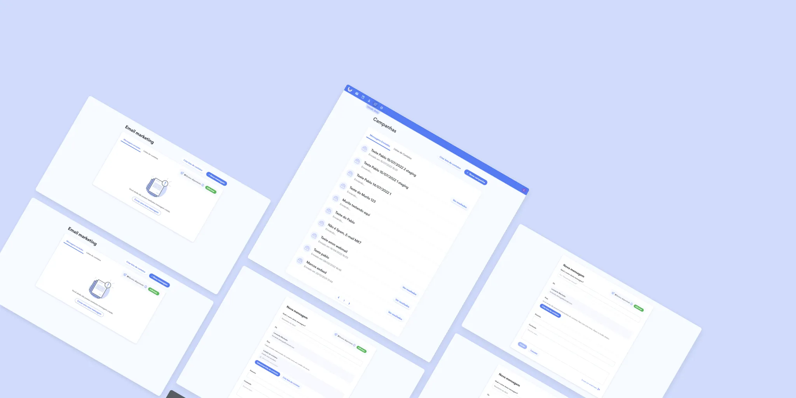
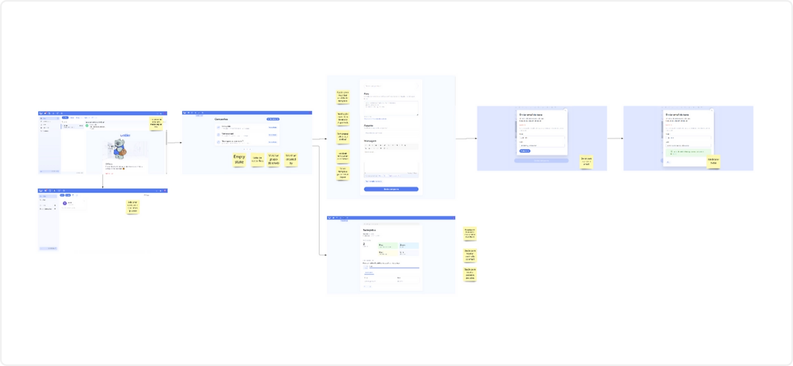
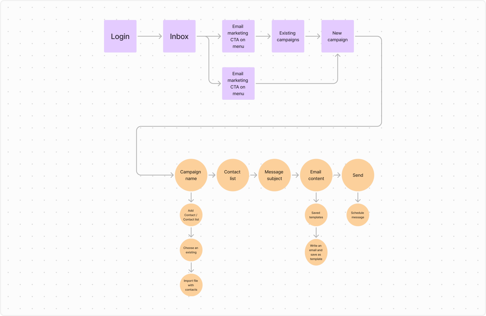
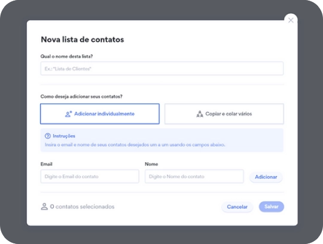
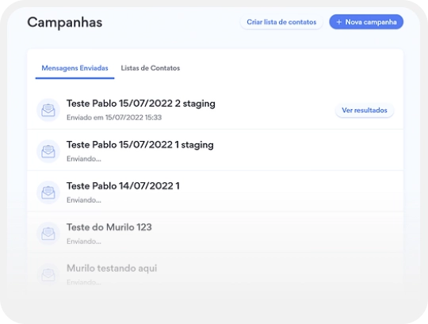

Umbler
UI
Desktop
Umbler launched an early version of its Email Marketing tool to validate customer demand. After gathering feedback from initial users, the team decided to improve the experience before a wider release. I was responsible for redesigning the core workflows while maintaining consistency with the existing product.
Before proposing changes, I analyzed the first version of the product and reviewed feedback from early adopters. Mapping the existing flow helped identify unnecessary steps, confusing interactions, and opportunities to simplify the experience.

Together with Product and Engineering, we translated user feedback into potential improvements. Using collaborative workshops and prioritization sessions, we selected the changes that would deliver the highest impact with the available development effort.
Once the priorities were defined, I redesigned the end-to-end user flow to reduce friction during campaign creation and ensure every decision solved a specific usability issue identified during research.

To validate our assumptions, I analyzed how leading email marketing platforms handled campaign creation and contact management. While their solutions confirmed several patterns, they also revealed opportunities where Umbler could provide a simpler experience.
The wireframes focused on reducing cognitive load while preserving familiarity for existing users. Rather than redesigning the interface from scratch, I simplified interactions and optimized the experience for smaller screens.
Results
As a result, the process of creating a new campaign became notably simple and remarkably faster in comparison to competitors. The key highlights of the new flow include:
Users can create reusable contact lists, import contacts from spreadsheets, or build new lists from existing contacts. Every step can be completed entirely with the keyboard, improving accessibility and efficiency.

I redesigned the campaign and contact list pages to improve scanability and reduce visual clutter, making it easier for users to locate existing campaigns and understand their status at a glance.

This project reinforced the importance of iterative design. Rather than replacing the existing product, we focused on solving the highest-impact usability issues identified through real user feedback. Small, targeted improvements produced a significantly smoother experience while keeping implementation costs low.